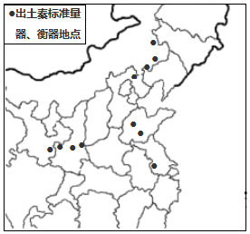
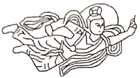
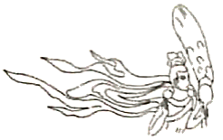

2020年北京市中考历史试题 · 选择题 第1、2、3、4、5题 · 对应解析
1．2019年，北京平谷上宅遗址被列为全国重点文物保护单位。遗址中发现了大量陶器、磨制石器和半地穴式房屋遗存，这三类考古发现还出现在（ ）
A．元谋人遗址B．北京人遗址C．河姆渡遗址D．半坡遗址
【分析】本题考查半坡原始居民的生产生活状况，知道半坡人使用磨制石器，会制造彩陶，种植粟，住半地穴式房屋。
【解答】据题干并结合所学知识，距今约6000年的半坡人是我国黄河流域农耕时代的代表，他们使用磨制石器，会制造彩陶，种植粟，住半地穴式房屋。故这三类考古发现还出现在半坡遗址。
故选：D。
【点评】本题考查半坡原始居民的生产生活状况，考查学生的理解和分析能力，解题关键是掌握基础知识。
2．如图是“医”字已知最早的写法，是用勾（医疗器具）将矢（箭）从人体上剔出，表示医疗。该字属于（ ）
A．甲骨文B．小篆C．隶书D．楷书
【分析】本题考查甲骨文，知道甲骨文使用象形、指事、会意、形声等多种造字方法。
【解答】如图是“医”字已知最早的写法，是用勾（医疗器具）将矢（箭）从人体上剔出，表示医疗。该字属于甲骨文，甲骨文是商朝刻写在龟甲或兽骨上的文字，是中国已发现的古代文字中年代最早、体系较为完整的文字。甲骨文使用象形、指事、会意、形声等多种造字方法。
故选：A。
【点评】本题考查甲骨文，考查学生的理解和分析能力，解题关键是掌握基础知识。
3．以下博物馆的名称来源于古代一项政治制度。这项制度是（ ）
名称 | 齐文化博物馆 | 晋国博物馆 | 西周燕都遗址博物馆 |
省份 | 山东 | 山西 | 北京 |
A．分封制B．郡县制C．科举制D．行省制
【分析】本题考查西周的分封制，知道西周实行分封制，分封到今天山东省的有齐国和鲁国，分封到今天山西省的主要是晋国，分封到今天北京的是燕国。
【解答】西周建立后，周天子把土地、奴隶和平民分封给亲属和功臣等，封他们为诸侯，建立诸侯国。当时分封到今天山东省的有齐国和鲁国，分封到今天山西省的主要是晋国，分封到今天北京的是燕国。故这项制度是分封制。
故选：A。
【点评】本题考查西周的分封制，考查学生的识记和理解能力，解题关键是熟练掌握基础知识。
4．如图《全国出土秦计量器主要分布图》可用于研究秦朝（ ）

A．铁犁牛耕的推广B．巩固统一的措施
C．迅速灭亡的原因D．“推恩令”的实施
【分析】本题主要考查秦朝加强中央集权的措施，秦统一六国后，为加强统治，在政治上建立专治主义中央集权制度；经济上统一货币度量衡；文化上统一文字；军事上北击匈奴；交通上统一车轨。
【解答】通过地图分析，这是秦朝计量器分布图，可反映出秦朝经济上统一度量衡，B符合题意。A主要是春秋战国时期生产工具革新。C图片没有体现出秦迅速灭亡。D西汉时期实行推恩令。
故选：B。
【点评】本题以秦朝加强中央集权这一基础知识为切入口，考查学生分析、判断问题的能力。
5．飞天是我国石窟艺术中最富舞蹈美感的形象之一，以下飞天形象的变化反映出（ ）
 大同云冈石窟中北魏早期的飞天舞姿雄健，具有游牧民族的审美特色 |  北魏迁都洛阳后开凿的龙门石窟中，飞天 的服饰、舞具都有中原汉风 |
A．书法艺术成熟B．北方民族融合
C．江南经济开发D．南北政权对峙
【分析】本题考查石窟艺术。注意题干信息“大同云冈石窟中北魏早期的飞天舞姿雄健，具有游牧民族的审美特色”“北魏迁都洛阳后开凿的龙门石窟中，飞天的服饰、舞具都有中原汉风”。
【解答】魏晋南北朝时期，我国北方出现了民族融合的趋势，各民族生产生活上各民族相互学习，错居杂处，加强了相互交流，促进了民族融合；唐朝实行比较开放的民族政策，民族关系和谐，民族融合。据“大同云冈石窟中北魏早期的飞天舞姿雄健，具有游牧民族的审美特色”“北魏迁都洛阳后开凿的龙门石窟中，飞天的服饰、舞具都有中原汉风”并结合所学知识可知，飞天形象的变化反映出北方民族融合；B符合题意。
故选：B。
【点评】本题注重考查学生的分析能力，本题的关键点是分析题干，注意准确识记石窟艺术的相关知识。